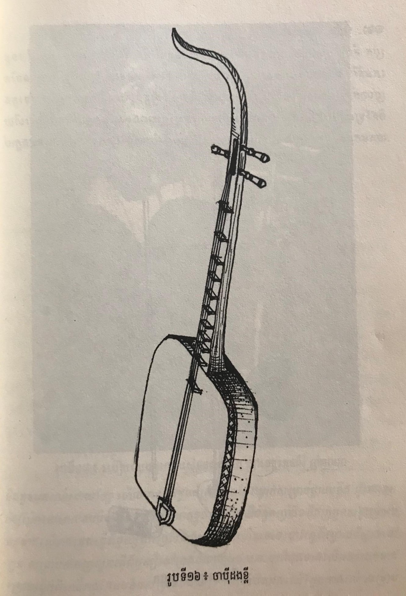

ចាប៉ីដងវែង
អានបន្តស្គរឆៃយ៉ាំ
អានបន្ត
ខ្លុយ
អានបន្ត

ភ្លេងបុរាណខ្មែរបានរក្សាទុក្ខនៅនិរន្តរភាពរបស់ខ្លូនអាចអោយគេចងចាំតាមរយៈឧបករណ៏ ៤ ប្រភេទ...


ការអប់រំ គឺជាការហ្វឹកហ្វឺននួវសក្តានុភាព ដែលជាគ្រឿងពង្រីកបណ្តុះ ឬ បង្កើនចំណេះវិជ្ជា ។ វប្បធម៌រលត់ ជាតិរលាយ វប្បធ៌មពណ្ណរាយជាតិថ្កុំថ្កើន ។
Copyright © Team o Nith